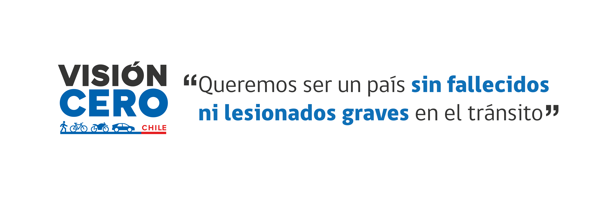

Política de Seguridad de Tránsito
16 Diciembre 2021
La Primera Política de Seguridad de Tránsitopara Chile se presentó en el año 1993. El documento enfocó su accionar en líneas de trabajo con el objetivo principal de convertir a Chile en un país con baja incidencia de accidentes de tránsito.
A raíz de la estabilización de las cifras de mortalidad durante los últimos años, como también los grandes cambios en infraestructura vial, la tecnología y calidad de los vehículos y la forma de desplazarnos, en mayo de 2017, el Comité de Ministros de CONASET tomó la decisión de desarrollar una nueva Política, con el fin de reimpulsar el trabajo y avanzar en la reducción de víctimas en el tránsito.
La nueva Política Nacional de Seguridad de Tránsito fue presentada públicamente en diciembre de 2017, con participación de Ministros y Subsecretarios de la CONASET y representantes de distintas entidades públicas y privadas que trabajaron en la elaboración del documento, como agrupaciones ciudadanas, asociaciones de víctimas de siniestros viales y actores relevantes en materia de seguridad vial.
Porque las muertes y lesiones graves en el tránsito son inaceptables, con esta Política de Seguridad de Tránsito de 2017, Chile se suma al llamado internacional “Visión Cero”, concepto que ha sido promovido especialmente por países líderes en seguridad de tránsito.
Durante 2018 se alaboró el Acuerdo Nacional por la Seguridad Vial de Chile como respuesta a la necesidad de fortalecer las políticas que apuntan a reducir los índices de siniestralidad vial en nuestro país, a partir de una alianza estratégica entre los sectores público y privado. El resultado es un documento que contiene 42 Medidas de Acción.
En diciembre 2020 se presentó la Estrategia Nacional de Seguridad de Tránsito 2021-2030. La creación de esta estrategia y de cada una de las acciones propuestas en ella, fue consensuada mediante un proceso participativo y contribuye y responde a las demandas ciudadanas en relación a la seguridad vial. El trabajo va en línea con los compromisos formulados durante la Tercera Conferencia Ministerial Mundial sobre Seguridad Vial en Suecia en febrero 2020 que culminó con la “Declaración de Estocolmo”.